My concentration for these images is homelessness, specifically homeless encampments. Homelessness is a prominent issue in my community. Just walking down the streets near my house, I see homeless people pushing shopping carts filled with their belongings, some sitting with their backs against store walls begging for money, and even some laying on the sidewalk to sleep. To bring awareness to this growing issue, I have decided to focus my concentration on photographing homelessness.
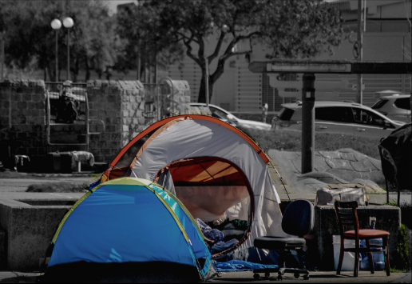 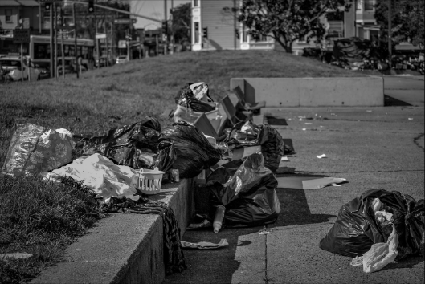 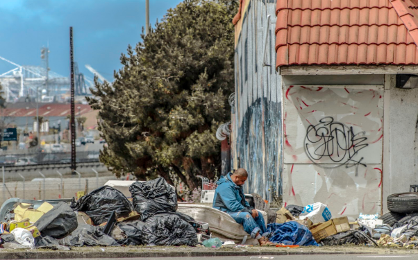 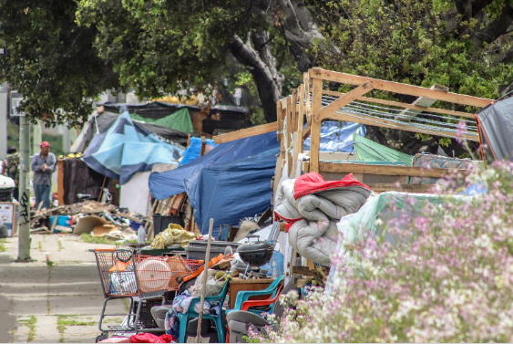 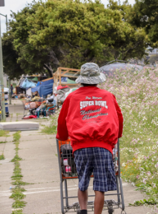 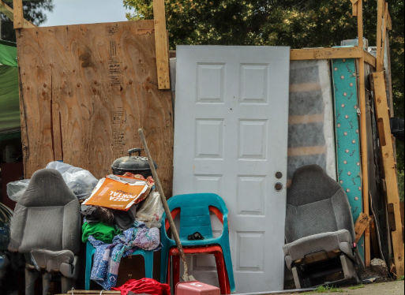 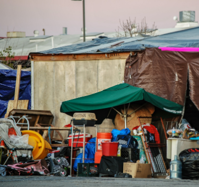 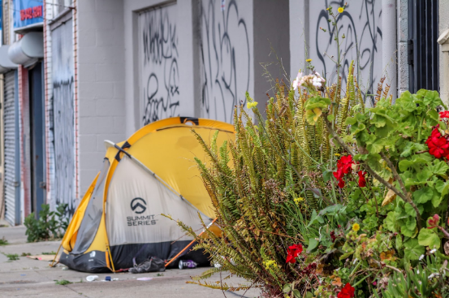 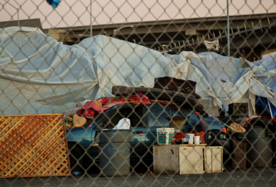 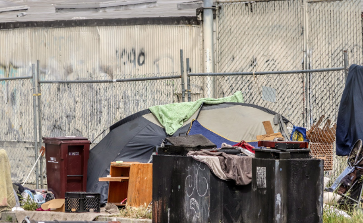 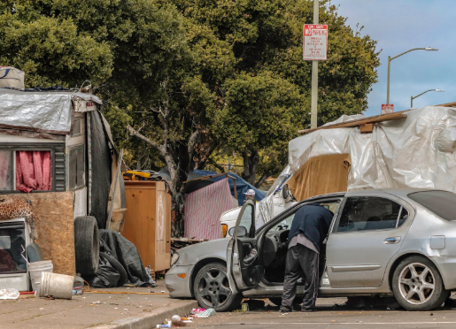 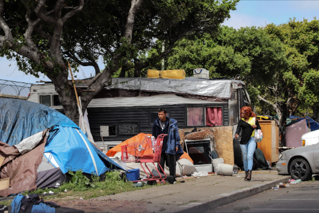